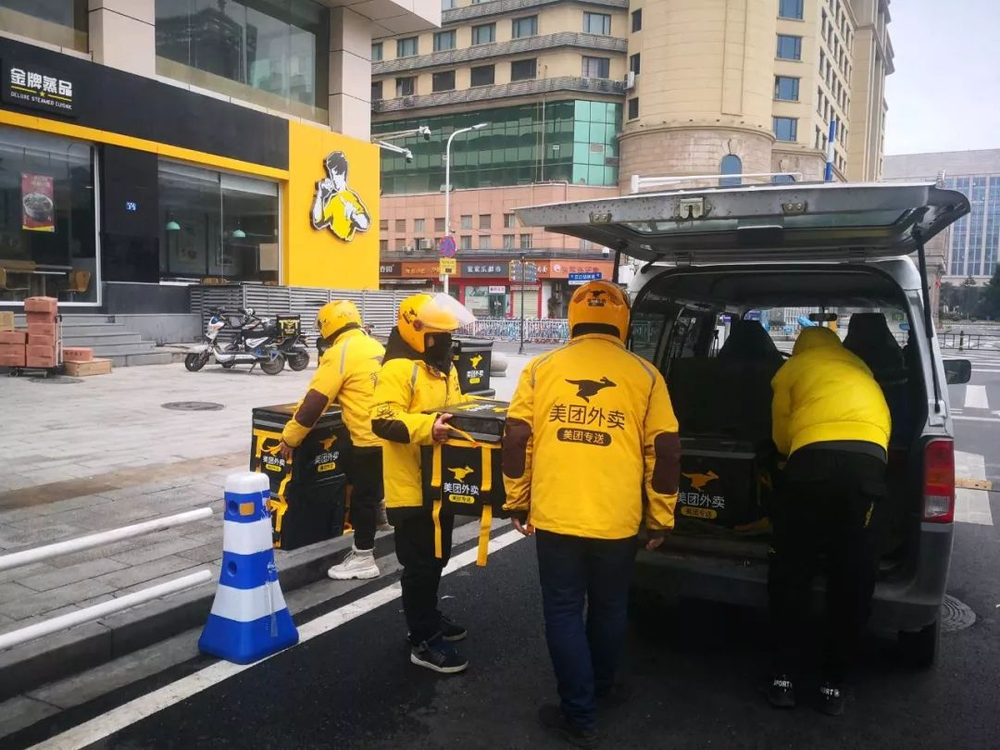
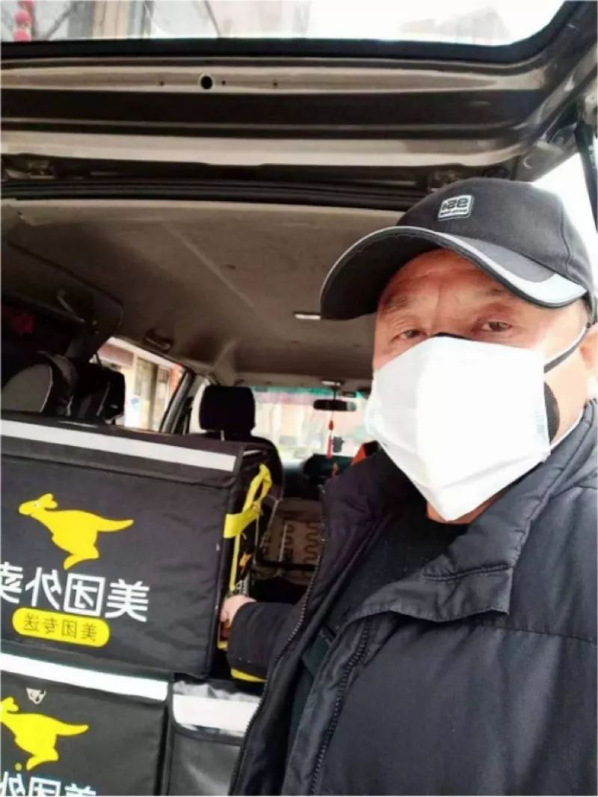
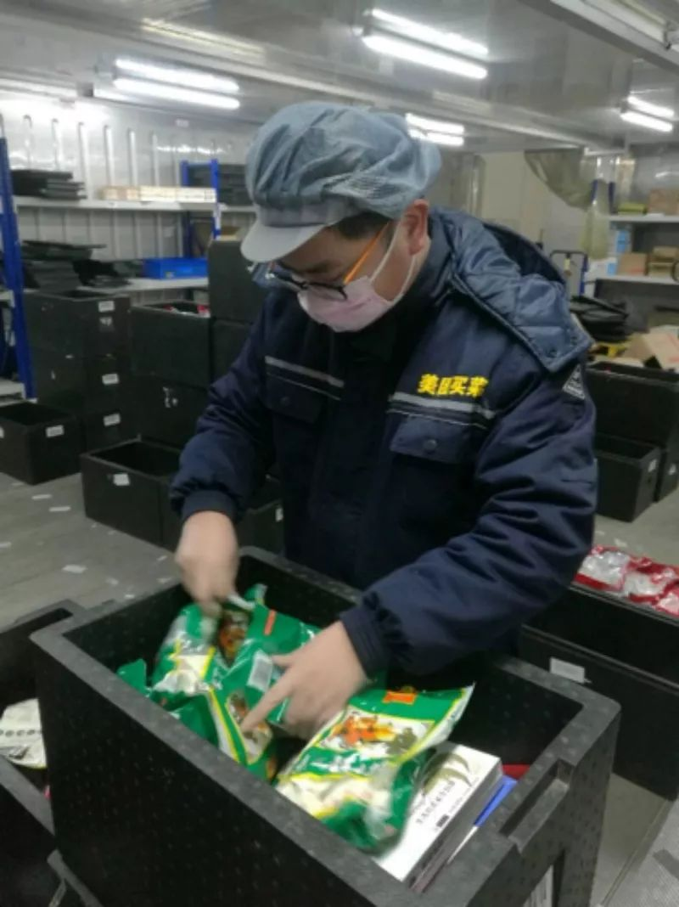

95后司机携妻为武汉送消毒水：“她担心我，死活不愿下车” | 棱镜
原文链接 备份链接 作者 | 江晓川 出品 | 棱镜·腾讯小满工作室 欢迎下载腾讯新闻APP，阅读更多优质资讯 “我不想让老婆跟我一起去武汉，但她死活不愿意下车。” 回想起几天前的经历，家住江苏无锡的90后货车司机顾师傅既有对妻子的愧意， …

武汉封城已经是第十天。
市民闭门不出，看上去，只要网络还通，手机还有电，大部分人的生活就能继续。
在移动互联网服务的背后，是一个个活生生的人穿梭在城市中，坚守各自的岗位，穿梭在城市中，尽量维持武汉人民生活正常运转。
过年期间本就人力紧缺，加上离开武汉返乡的员工一时间无法返回，许多原本计划休假的人，在这个有些沉寂的城市，度过了最繁忙的春节。
他们有的将妻儿托付给月嫂，只能从视频里看刚出生的孩子一天一个样；有的身兼多职，抽空窝在车里睡一会儿；因为工作所在地点附近封路，保障市民吃上蔬菜的他们，连着一个多星期都没吃上新鲜蔬菜。
其中的一位告诉我，这其实没什么大道理好讲，紧要关头，无非是各人做好自己的本职工作。
因为，这是自己的城市，要自己守护。
没有大家哪有小家
我叫徐林林，在美团买菜武汉大仓负责运输服务中心。
运输服务中心的工作就是将仓内的货物、蔬菜、水果、冻品运输到市区的一个个门店，我主要是做车辆调度、司机管理。
武汉的美团买菜是预售制，用户前一天晚上在 App 下单，我们晚上分拣好，配送到门店，第二天用户直接在社区门口的门店自提。
我本来是准备春节期间回老家。因为市民疯抢蔬菜，订单量一下子增大，我跟家里人商量，今年暂时不回去了，先把这一关过去再说。家人还比较理解、支持的。
我除夕当晚就跟司机一块去配送了。到了年初二，大仓这边人手比较紧张，我就决定回大仓这边。
回去的路上，所有的路都封了，我找了四五条小路都不能走。最后找了一条小路，前面那个司机也是去蔡甸（大仓所在区域），我就跟着他开，结果先是陷到泥里出不来，后来轮胎又爆了，折腾了很久才赶到大仓。

△徐林林用自拍记录下这段「囧途」
兄弟们都非常辛苦，现在二十多人干着原来四十个人的活儿。估计到封城解除之前，都得是这种状态，保障武汉市民能吃上蔬菜。
仓里没有食堂，特殊时期，我们之前准备了一些饺子、泡面、火腿肠一类的干粮，大概吃了一个星期干粮。蔬菜确实是很久没吃了。
现在我们基本上是 24 小时都在这边，我们准备了被子，就在仓里呆着。要协助仓里做分拣、加工，还有公司口罩、消毒水一类的行政物资配送，也是我们负责。
我在武汉读的大学，毕业以后一直在武汉工作。算起来一共在武汉待了 12 年。现在也在武汉安了一个小家。
我和妻子是去年中秋节结的婚，本来这个年是婚后第一个春节，是要带她回老家，见见亲戚朋友的。媳妇挺支持我的，为了让我放心，她就回了武昌娘家，在那边呆着。
我昨晚还在跟她说，今年没时间陪你了。
我可以帮助一下这个城市
我叫刘小国，武汉本地人，我的爷爷、父亲也都是武汉人，家住汉口硚口区。
我们武汉人说白了就是有点脾气不好，但是真的很大方的，该做什么事情，绝对不含糊。
我和朋友合伙开了一家新能源公司。1 月 26 号我跟朋友聊天，他跟我说美团现在需要人去做义工服务，免费送餐给医护人员，问我想不想去，我就让他帮我报个名，我愿意去。
第二天早上八点多钟，一个姓胡的美团的人就给我打电话了，他确认了，我就可以上岗了。
现在我一般 9 点开车出门，然后开到香他她餐厅的一个门店，他们是义务给医护人员免费提供餐食的，我到店里能帮忙的也给他们帮下忙，然后就取餐，11 点半到 12 点之间送到医院。
美团有专门的包装箱，到了医院，我把包装箱卸到推车上，他们（医生）在一个专门的地方把餐取出来，我把包装箱取回来消一遍毒，再放回车里。
今天下午有一批送给医院的水果，我就多跑了一趟。前几天都是一天两趟。
送完之后，给装餐食的包消一遍毒，我再回去。下午三四点钟，我再去跑一趟，把晚餐送了。刚刚送完汉阳中医院。
我今天跑的是三个医院，两个汉阳的医院，一个汉口的医院，加起来一天跑两百公里吧，跑一趟是三四百份，中餐晚餐都必须要给他们送到位，加一起是七八百份。

△快驴司机刘小国
我要感谢美团，给我提供了机会，也算是帮助了一下这个城市。我很多朋友知道我在做这个（给医护人员做后勤），也都想加入进来。
我住的那个地方就在华南海鲜市场的后面，本来计划是去杭州玩几天，再去广州亲戚家过年，但是不是去不了了嘛，今年过年活动范围就在小区里了。
在封城之前，我们全家聚在一起吃了年夜饭，之后我老婆去照看孩子，我住在这边，就全靠手机、视频联系了。
我老婆比较担心，一天要给我打三个电话，就说要注意安全。我说没什么，别听那些制造的恐慌，真没那个必要。
你别看我这个年纪，我还是可以踢足球的。我们有一个团体，大概一个月要组织到汉阳体育馆那边踢一场球。上一次踢还是 12 月的时候。
疫情结束之后，除了工作上的安排，我想看看能不能组织一次踢球吧。两个月没踢了，希望 2 月份能踢上吧。
孩子出生一周，我搬去了仓库
我叫亓亚洲，是美团买菜生鲜加工中心区域主管。
我和妻子是高中同学，两年前结婚了。老婆今年生孩子，本来我计划孩子出生后休一个月。我们公司有 15 天陪产假，算上春节假期和年假，我有一个月的时间陪她。我请了一个月嫂，准备和月嫂一起照顾月子。
1 月 5 号孩子出生，1 月 9 日北京来了两个同事支援这边，我回了趟公司，帮着做过年前的一个交接。后来考虑武汉的紧急情况，我们商量再三，决定停止休陪产假，回来工作。
蔡甸这边离家比较远，通勤不方便，我就住在加工中心附近。
后来疫情紧张，我就更不能回家了，不能让家人冒风险。每天从视频里见到老婆和孩子，家里拜托月嫂照顾。
我家在汉口那边，听说那边疫情比较严重，很多的菜市场、超市都关门了，也担心家里的吃饭问题。
1 月以来应该是我加入这个项目以来，工作量最大的一段时间。

△生鲜加工中心
原本很多员工都住在附近，有的小区会有不让人出入的要求，所以来公司的员工就变少了。
另一方面，各个社区市场关闭以后，我们平台的线上订单量非常大，我们加工中心的任务量激增，每天都带着员工在现场满负荷的工作。主要工作就是加工蔬菜、水果。
封城之后这附近的餐饮店都关门了，周边主要路段和村庄也封路了，我们附近两个大型超市还在正常营业，只能准备一些干粮，给员工备着。像饺子、方便面、八宝粥这些，换着吃。
我们的工作时间一般是白天 10 点到晚上 11 点，下班以后才能和家里视频，孩子一般都睡了。现在小孩还比较乖，晚上也不闹人。但是也觉得挺对不起妻子的。
我和妻子都是单亲家庭，从小都是跟着父亲在武汉生活。但是他们离我们住的地方都比较远，现在交通管制，他们也不方便到家里去看望。
虽然也会害怕，更多一点信心
我叫姜海峰，今年 30 岁，是美团买菜站点的负责人。
除了外卖小哥，我们门店是最直接面对消费者的。
我老婆都是武汉人，我算是新武汉人，从十年前大学毕业就留在武汉。平时我们都在汉口的房子住，上下班就汉口、汉阳两边跑。我不会开车，家里的车都是老婆开。最近因为交通限行，我就住到汉阳这边来，步行上班。
元旦前后，我们已经安排好了工作，每个站点每天都有两个人上班，安排员工轮流休假，回老家去和家人团聚。
现在突然出现这个情况，在外地过年的员工肯定回不来了，作为门店主管，我们肯定是要顶上去。
年三十晚上，我从后台看到订单是平时的两三倍，但是店里只有一个人能在岗。我赶紧叫我老婆赶在封路之前把我送到汉阳这边来。
招商公园这个小区很大，消费水平也还可以。附近没有大型超市配套，也没有菜市场。因为过年的关系，周围的饭店、生鲜店都不开了，对出行不方便的居民来说，美团买菜就是他的依靠。

△门店开门营业之前（图 / 姜海峰）
现在店里一天是从 7 点钟开始的，前一天晚上大仓已经把货送到站点里。我们上班以后，要在 8 点前把货品分类放到货架上，像汤圆、水饺这种冻品放在冷柜里，绿叶菜放在一起，切配好的净菜要冷藏。还有的菜品品质不好，我们要挑出来扔掉。这样才能保证新鲜。
8 点开始营业之后，顾客来取他们前一天在手机 App 下的预售订单。我们要求是一分钟之内拣货完毕，交给顾客。现在这个特殊状况就要更快，很多顾客不愿意在店里多待，他也害怕。
以前顾客会在下班以后陆陆续续再来取菜，他下班很晚那我们就要等到很晚。最近不一样，一般都是一早赶快出来把菜拿回去，一天就不出门了。
过了 12 点，当天订单基本上就结束了。
我们面向社区，现在社区里会有救护车进进出出，把人拉走，员工虽然也会害怕，我能做的就是跟员工站在一起，让他多一点信心。我就住在站点附近，因为我老婆在超市工作，也要坚持上班，所以我们从大年初一以后就没有见过面了。
现在要说害怕，我倒是不害怕的，一是我身体比较好，二是只要自己做好防护，就没有什么可怕的。听同事说，自疫情发生以来，我们美团买菜一直全力维持武汉 22 家站点正常运营。
这场疫情之下，有太多值得被听见的声音，不论你是一线医护人员、患者及家属、物资供应方、物流支持人员、志愿者、还是像本文中的外卖平台工作者，欢迎联系我们，让我们记录下你的故事。
原文链接 备份链接 作者 | 江晓川 出品 | 棱镜·腾讯小满工作室 欢迎下载腾讯新闻APP，阅读更多优质资讯 “我不想让老婆跟我一起去武汉，但她死活不愿意下车。” 回想起几天前的经历，家住江苏无锡的90后货车司机顾师傅既有对妻子的愧意， …
原文链接 备份链接 今天是武汉封城的第六天，昨天给大家介绍了武汉人爱吃什么，今天就给大家介绍一下，武汉我自己最心爱的几处风景。 黄鹤楼自然不用说了，五A级景区，游客如织。但我还是最喜欢晴川阁。晴川阁在汉阳，晴川历历汉阳树，芳草萋萋鹦鹉洲。 …
原文链接 备份链接 早上五点半睁眼，手机通知中心一长串消息，很多都写着“武汉10点封城”，以为自己没睡醒，看花眼，封城也太突然，前天晚上没有丝毫风声，倒像拍脑子的临时决策。点开新闻发现真的全线封锁，急忙从床上跳起来，睡意全无，继续刷手机的 …
原文链接 备份链接 正月二十五。 今天仍然是大好晴天。让人感觉处处生机。天上的云，很有特色。我在郊区村里的邻居都在讨论，这是什么天象，是鱼鳞云吗？被否。去年，我一直住在那里写作，直到春节前才回到武昌的文联大院。村里邻居告诉我，他们那一 …
原文链接 备份链接 正月十六。 按中国人的习惯，到今天才算是真正过完年了。起床拉开窗帘，阳光明亮得像是初夏时分，心情顿时一爽。我们多么需要这样的阳光。需要它来驱散笼罩满城的阴霾，来化解郁结人心的痛楚。 吃饭时看手机信息，还好，有很多 …